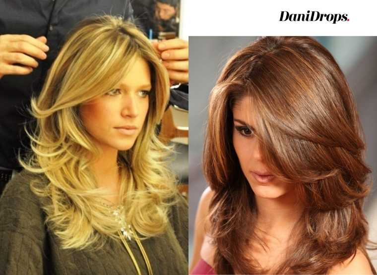
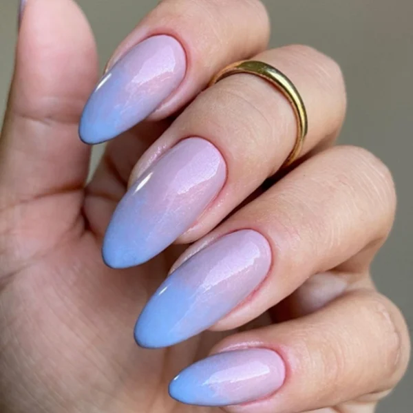

Cortes de cabelo
1 - long bob
O long bob é uma tendência de corte de cabelo feminino que varia entre curto e médio.
Nele, as pontas são maiores que a nuca, semelhante a um chanel, só que mais comprido. Ele não fica parecendo tão curto por ser mais comprido na frente. Por isso, é ótimo para quem não quer uma mudança muito radical no tamanho das madeixas.
É um estilo de corte ideal para o verão e épocas de calor, uma vez que a quantidade de cabelo é bem menor. Ainda assim, para refrescar os dias quentes, o tamanho permite que os fios sejam presos em um rabo de cavalo e em outros penteados femininos para o verão.
Essa é uma alternativa interessante para quem tem rosto redondo e deseja dar uma alongada. Para deixar o long bob ainda mais estilizado, aposte em um repartimento de lado e em uma franja média
2 - Blunt Cut

Essa é uma tendência de corte de cabelo feminino mais recente. Trata-se de um tipo de corte caracterizado pela base reta. O mais comum é ver a pessoa utilizando as madeixas bem lisas e divididas ao meio, mas, ao contrário do que muitos pensam, não é necessário ter o cabelo totalmente reto e escorrido para ser considerado um blunt cut.
Desde que o formato não tenha curvas na base, você pode fazer as alterações que desejar. Sendo assim, vale apostar em:
- um repartimento de lado;
- arriscar nos fios desfiados;
- investir em uma franja de tamanho médio… são várias as opções.
É importante lembrar que ele também combina com tipos de penteados para cabelos cacheados ou ondulados.
Com as leves alterações, o corte se torna ideal para diferentes cabelos e estilos de rosto, sendo apropriado tanto para formatos arredondados quanto para aqueles um pouco mais ovais e compridos.
3 - Pixie cut
O pixie cut é aquele corte curtíssimo, muito conhecido também como joãozinho. É uma opção perfeita para quem não tem muita paciência para cuidar dos fios no dia a dia ou não dispõe de muito tempo para isso.
Ele é bastante recomendado para quem está com os cabelos muito danificados e deseja recuperar a saúde dos fios ou mesmo para os momentos de transição capilar, permitindo que o cabelo fique mais bonito e sedoso ao crescer.
Além disso, os acessórios utilizados ganham mais destaque no look por ficarem mais à mostra nos penteados femininos.
Ele fica muito bem com uma franjinha lateral e combina com rostos ovais, redondos e mesmo quadrados. É um corte bastante moderno para quem quer uma mudança chocante para arrasar!
4 - Cortes em Camadas

O repicado em camadas é uma tendência de corte de cabelo feminino para quem deseja cortar os fios, adquirir um visual novo, bem como reduzir a grande quantidade de cabelo — tudo isso sem mudar o comprimento que serve de base.
Ele é exatamente o contrário do corte blunt cut e ajuda a valorizar as ondas dos fios. Quando feito em cabelos compridos, pode resultar em um formato em V ou em U, dependendo da proporção do repicado.
Investir em uma nova tendência de corte de cabelo feminino é uma boa opção tanto para quem deseja inovar no visual quanto para quem quer acabar com as pontas duplas e garantir fios mais saudáveis e sedosos.
Estilos de Unha
Estilo: Redonda
Geralmente as unhas redondas carregam características mais tradicionais, e por isso combinam para quem é mais discreta e prática. Ao mesmo tempo que você tem destaque para as mãos, você tem menos trabalho, pois quebram e lascam com menos facilidade.
Estilo: Amendoada


Também chamada de unha almond, a unha amendoada é parecida com a redonda, mas sua ponta é mais afinada. O nome veio da amêndoa, que tem um formato bem parecido com esse tipo de unha.Se você quer que seus dedos pareçam mais longos, esse é um formato super indicado. As pontinhas mais estreitas dão essa impressão e a mão fica linda!
Estilo: Quadrada
O formato quadrado também é super popular e moderno. Como os cantos formam um ângulo reto, esse tipo de unha fica mais suscetível a quebrar e lascar.Se seus dedos são muito longos e você quer que eles pareçam menores, o formato quadrado é a escolha ideal.
Estilo: Bailarina
Esse formato é super elegante e delicado. As unhas bailarina lembram o formato quadrado, mas os dois cantos são lixados levemente para que elas não fiquem totalmente retas. O formato lembra um funil, já que a ponta fica reta, mas as laterais são um pouco afuniladas. Como o ângulo formado não é de 90º, elas ficam mais resistentes à quebra, então é uma ótima alternativa para quem gosta da unha quadrada, mas precisa de mais resistência.
Estilo: Stiletto
A palavra stiletto remete ao salto alto fino, já que esse formato de unha realmente lembra isso. Esse tipo de unha é para quem gosta de ousar e não tem medo de apostar no que é mais arrojado.
Geralmente, quem opta pelo formato stiletto tem as unhas compridas. Elas são triangulares e pontiagudas, então é preciso ter cuidado para não se arranhar e arranhar outras pessoas.
Existem ainda outros formatos menos conhecidos, como a unha batom, que é mais longa de um lado do que do outro. Também temos a pico de montanha, que lembra a stiletto, mas tem a ponta menos pontiaguda. A criatividade não tem limites e sempre surgem novos formatos!
Estilo: Pico da Montanha
Ousado, esse formato pontiagudo é uma adaptação das unhas stiletto e recebe esse nome por ter uma base mais larga com a pontinha fina.
Se você quer transmitir uma personalidade marcante, sem precisar recorrer aos alongamentos, essa pode ser sua nova queridinha! Apesar do tamanho médio, ela certamente causa um grande impacto.
Tecnicas de Alongamento
Para quem não consegue ter unhas compridas e fortes, o alongamento pode ser uma opção super interessante. Se você costuma roer as unhas e quer que elas cresçam, apostar no alongamento também é uma boa ideia.
Com o tempo e a popularização, várias novas técnicas de alongamento foram surgindo para acompanhar esse universo da beleza que é cheio de novidades. Vem que nós vamos te apresentar os principais tipos:
Fibra de Vidro
Essa técnica tem ganhado o coração de quem gosta de ter unhas compridas e sempre esmaltadas. A fibra de vidro dá um efeito super natural e também tem uma durabilidade interessante para quem quer manter as unhas esmaltadas por mais tempo.
O passo a passo é um pouco demorado e complicado, mas quem conhece recomenda mesmo assim. Primeiramente, é preciso remover as cutículas e polir as unhas para remover a oleosidade natural, já que isso pode atrapalhar na fixação das fibras.
Depois, aplica-se um primer e um gel que vai à cabine UV para secar. Em seguida, o profissional deve passar uma outra camada de gel e grudar os fios da fibra de vidro nesse gel ainda molhado.
Logo após a aplicação dos fios de fibra de vidro, a mão é colocada na cabine de luz UV durante alguns minutinhos para que as unhas sequem completamente. Depois desse passo, já é possível começar a visualizar como as unhas estão ficando.
Os passos finais, que envolvem mais algumas camadas de gel, são responsáveis por deixar as unhas mais naturais, tanto na espessura como na curvatura. É um processo longo, que exige bastante paciência, mas cada minuto vale a pena!
Unha em Gel
De uns anos pra cá, as unhas de gel explodiram e toda essa fama não é por acaso. Elas são feitas com um gel que precisa secar em uma cabine de luz UV, uma espécie de “forninho”, mas fica tranquila que não esquenta!
Funciona assim: a manicure precisa polir e higienizar as unhas naturais para que elas recebam a tip, que é a parte extensora, como se fosse uma unha postiça. As tips são coladas com uma cola especial.
As tips geralmente são bem compridas, então é preciso cortá-las no tamanho desejado depois de coladas. Em seguida, as unhas são polidas e lixadas no formato desejado. Agora é a hora de aplicar o gel com um pincel bem fino e, depois, colocar a mão dentro da cabine de luz UV por alguns minutos, até que o gel esteja seco.
O processo ainda exige mais algumas finalizações, como outra camada de gel e o top coat, mas em pouco tempo ela estará pronta para receber o esmalte da cor que você mais gosta. As unhas em gel duram de duas a três semanas.
Unhas postiças
A unha postiça é o tipo de alongamento mais antigo e que, ainda hoje, faz bastante sucesso. Ela já vem esmaltada e você pode encontrar opções em diversas cores e com vários estilos de nail art.
Para aplicar as unhas postiças, basta colá-las à sua unha natural e pronto! Lembre-se de fazer isso com uma cola apropriada para não colocar a saúde de suas unhas e da sua pele em risco.
Se você está se perguntando qual a melhor técnica, precisamos te falar que depende de vários fatores, como seus gostos pessoais, sua rotina, quais atividades manuais você desempenha, qual seu orçamento… São muitos pontos para analisar.
Nossa dica de ouro é conversar com uma manicure de confiança para que ela indique a técnica mais adequada ao seu perfil.
E para as vaidosas de plantão, que tal dar uma olhada nessas dicas sobre penteados fáceis para fazer em menos de dez minutos e arrasar depois das unhas feitas?
E aí, o que achou de conhecer mais sobre os formatos de unha e os diferentes tipos de alongamento? Fique sempre de olho aqui no nosso blog para não perder as novidades do universo da beleza.
Assine também a nossa newsletter, assim você recebe nossos conteúdos em primeira mão na sua caixa de entrada. É só colocar seu e-mail aqui embaixo!